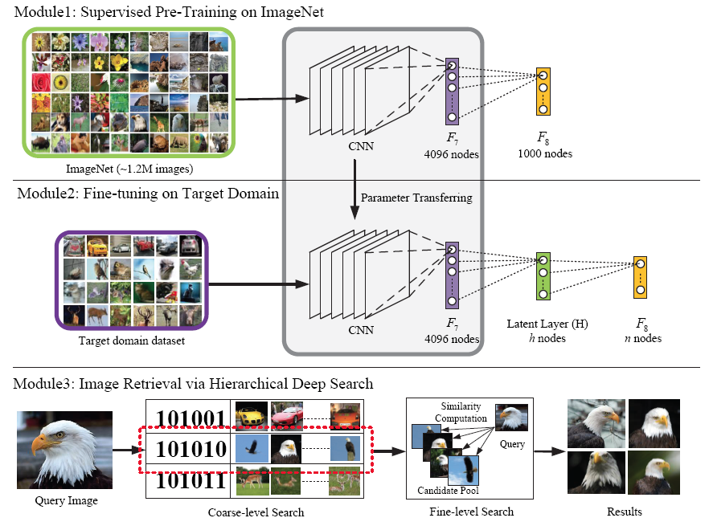
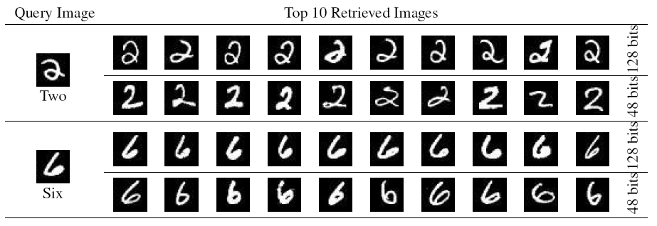
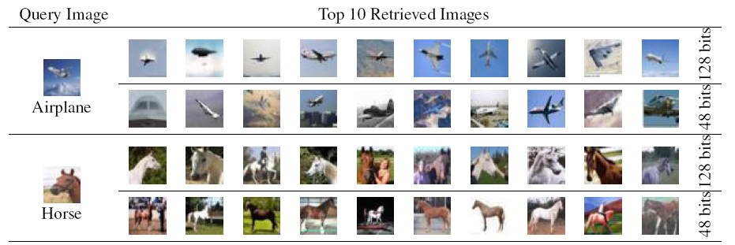

deep learning of binary hash codes for fast image retrieval
目录
Deep Learning of Binary Hash Codes for Fast Image Retrieval
abstract
近似最近近邻搜索是大规模图像抽取的一个有效策略。本文基于CNN网络的最近研究，提 出了一个有效的深度学习框架生成二值码，用于快速的图像抽取。具体思想是，当图像 具有对应的标签数据，通过深度学习的隐层可以学习到二值码来表示数据的标签。本文 提出的方法不同于其他有监督的方法，需要提供pair-wised的数据来进行学习；本文提 出的学习方法只需要point-wised数据即可。
introduction
Content-Based Image Retrieval 通过对图像内容进行分析，然后检索相似图像。因
此，图像内容的描述和相似度衡量便是关键。在深度学习以前，主要是通过人工构建图
像描述符来描述图像内容；深度学习爆发后，基于CNN的图像技术使得图像处理的相关技
术都得到的大量的提升。
得益于CNN网络能够学习丰富的中级图像描述符， =AlexNet=1 使用第7层的特征作为特征
描述符进行图像抽取，获取了较好的结果。然而由于直接在CNN高维特征（4096）进行相
似度计算是比较低效的，可以对特征进行 PCA 降维2。
CBIR 中图像描述和相似计算都是比较关键的。在大规模图像抽取中，由于面对的是高
维特征，常规的检索方式并不适合该场景。近似近邻(Approximate Nearest
Neighbor)或者基于哈希的方法(Hasing Based Method)比较适合该场景。将高维特征
映射到低维空间，然后生成二值码，通过二值匹配或者Hamming距离计算，可以快速的实
现相似度计算。有些方法3都需要构建一个图片近似矩阵，来构建pair-wised的训练集，
从而在低维空间拉近相似图片的距离。
本文假设图片具有标签数据后，利用CNN直接学习图像的二值描述。本方法具体有如下特 性：
- 提出了一个简单有效的有监督学习框架，用来实现图像抽取
- 简单的改动网络模型，就可以学习出图像的描述，并可以快速的实现图像抽取
- 具有较好的性能，例如在CIFAR-10和MNIST数据集。
- 训练数据不需要pair-wised，能够快速扩展到大规模数据集上
related work
哈希算法可以分为两大类：有监督和无监督方法。
无监督方法使用没有标记的数据学习哈希函数。 =Locality-Sensitive Hashing(LSH)=4 通过最大化相似数据分到相似二值码的概率。 =Spectral Hashing(SH)=5 通过对数据做PCA降维，在PCA主方向上取阈值截断获取二值码。
有监督方法可以更好地提升检索性能。有监督方法6, 7, 8引入标注数据， 并且使用pair-wised数据来学习哈希函数。
大多数深度结构用于哈希函数学习都是使用 auto-encoder 结构9, 10。
方法3采取对相似矩阵进行矩阵分解，然后学习隐特征的方法，获取较好的效果， 但是受限于需要标注大量数据，无法很好的扩展到大规模数据集上。
method
图示1为本文提出的深度学习框架。主要包含3部分：
- 预训练好的深度网络，本文采取的
AlexNet - 对隐特征进行微调，学习图像标签数据和哈希函数
- 图像抽取功能

图1 图示1
Learning Hash-like Binary Codes
很多文章都证明了 Alexet 的 F6-8 都可以作为图像的描述，直接使用这些高维特征进行图像检索，需要消耗大量的计算。
本文提出了基于图像标签进行图像描述学习和哈希函数获取二值码进行图像检索的方法。
假设分类层F8的结果依赖于 Latent Layer h个节点的 on or off 的状态。即相
似的二值码会推导出相同的标签。通过在F7和F8层之间引入一个隐层H，该隐层为一
个全链接层，该层节点状态由后续的分类层F8层根据分类结果决定，该层的节点的激
活函数为 sigmoid ，所以该节点的值在[0-1]之间。
CNN网络的权重值为预训练的AlexNet，隐层H和分类层F8随机初始化。整个网络通过反 向传播进行学习。
Image Retrieval via Hierarchical Deep Search
=ZFNet=11 分析了深度CNN网络的浅层网络用来学习局部可视化描述符，深层网络 用来获取语义信息来识别。本文采取一个由粗到细的检索策略，用于快速和准确地进行 图像检索。首先采用H层的二值码进行召唤，然后采用最深层的中间图像描述进行排序。
- Coarse-level Search
首先根据检索图像 I ，计算出H层的输出作为图像的签名(Signature)，表示为 Out(H) ，对激活值进行二值化。对于每一位 j=1…h (h 为H层的节点数量)， 计算二值码：
\begin{equation} H^j = \left\{ \begin{aligned} 1 & & Out^j(H) \geq 0.5 \\ 0 & & otherwise. \end{aligned} \right. \end{equation}\(\Gamma=\{I_1,I_2,...,I_n\}\) 表示需要检索的候选图像集。对应的二值集合为 \(\Gamma_{H} = \{H_1,H_2,...,H_n\}\) ，其中 H_i ∈ {0,1}^h。给定一个输入图片， 根据二值码的Hamming距离小于一定的阈值获取候选集 P 。
- Fine-level Search
获取F7层的特征作为描述，设定 V_q 和 ViP 分别表示请求图像和候选集 P 中 图像的F7特征。采取 Euclidean 距离作为相似度度量函数：
\begin{equation} s_i = \Arrowvert V_q - V_{i}^{q}\Arrowvert \end{equation}Euclidean距离越小，相似度越高。
Experimental Results
首先介绍一下实验用的数据集（MNIST，CIFAR-10），然后和其他一些算法进行对比。最后会在 Yahoo-1M 数据集上进行验证。
Datasets
MNIST Dataset 是一个具有10个类别的手写体数字识别数据集。60K的训练数据和
10000的测试数据。所有的图像都已经归一化成了28*28的灰度图像。

图2 MNIST Dataset
CIFAR—10 Dataset 是一个具有10个类别的，每个类别包括6k图像，总共具有60K图像
的数据集，训练和测试数据集分成50K和10K。

图3 CIFAR-10 Dataset
Yahoo-1M Dataset 包括大概1M的电商产品图像，分为了116类。
图4 Yahoo-1M Dataset
在数据集 MNIST 和 CIFAR-10 上使用了hash code和其他哈希算法进行了对比，在 Yahoo-1M上去评测的图像检索的效果。
Ealuation Metrics
采取了给予排序的评测方法12，有一个请求图片 q 和一个相似度度量函数，每 一个图片都可以得到一个排序。对top-k的图片进行评测计算：
\begin{equation} Precision@k = \frac{\sum_{i=1}^{k}Rel(i)}{k} \end{equation}其中： Rel(i) 为请求图片和第 i-th 图片的相似度。这里仅仅考虑是否是同一个 标签图片， Rel(i) ∈ {0, 1}。
脚注:
ImageNet classification with deep convolutional neural networks
Neural codes for image retrieval. In Proc. ECCV, pages 584–599. Springer, 2014
Supervised hashing for image retrieval via image representation learning. In Proc. AAAI, 2014
Similarity search in high dimensions via hashing. In VLDB, volume 99, pages 518–529, 1999
Spectral hashing. In Proc. NIPS, pages 1753–1760, 2009.
Supervised hashing with kernels. In Proc. CVPR, pages 2074–2081, 2012
Minimal loss hashing for compact binary codes. In Proc. ICML, pages 353–360, 2011
Learning to hash with binary reconstructive embeddings.In Proc. NIPS, pages 1042–1050,2009.
Semantic hashing. International Journal of Approximate Reasoning, 500(3):500, 2007.
Using very deep autoencoders for content-based image retrieval.In ESANN, 2011.
Visualizing and understanding convolutional networks. In Proc. ECCV, pages 818–833. Springer, 2014.
Hierarchical semantic indexing for large scale image retrieval. In Proc. CVPR, 2011.